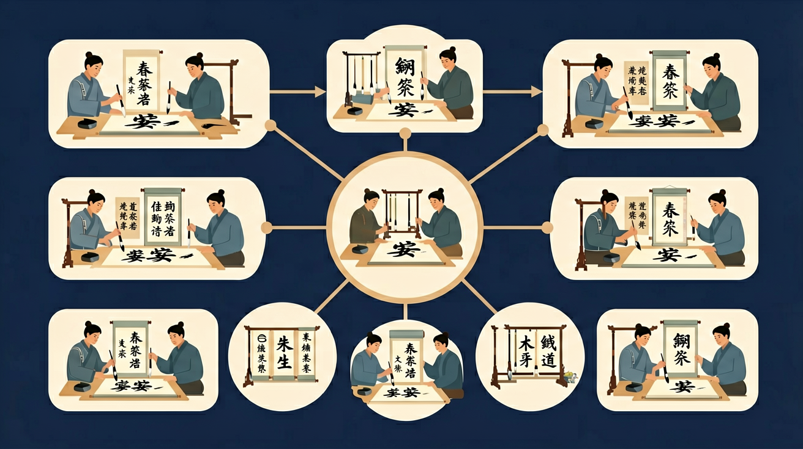

了解田字格结构，学会在格中正确书写汉字
掌握"永"字八法，学习基本笔画的书写规律
能够工整书写常用汉字，保持笔画美观
初步感受书法艺术之美，培养审美情趣
❓ 为什么我写的横总是歪歪扭扭的？
❓ 毛笔分叉了怎么办？
❓ 老师说的'逆锋起笔'到底怎么操作呀？
学完这一课，这些问题你都能自信地回答。
正确坐姿：头正、身直、臂开、足平。
握笔时"五字诀"：按、压、钩、顶、抵
保持笔杆垂直，用笔肚而非笔尖发力。
田字格将方格分为4个区域：左上、右上、左下、右下
⏱️ 60秒内书写4个汉字，展现你的书法功力！
书法练习不只是把字写对，还要讲究间架结构和运笔节奏。小学阶段先把基本笔画写稳，再练常用独体字和合体字，做到横平竖直、重心平稳、比例协调，逐步写出匀称美观的汉字。
先观察范字的笔画走向和部件位置，再一笔一笔临写，写完与范字对照：哪一笔偏了、哪一部分太大或太小。每次只改一两个问题，比盲目多写更有效。
常见误区：常见误区是只求数量不求质量，或每一笔都重新起笔导致断气。应看清结构，注意笔画连贯和重心。
临帖时更有效的做法是？
And：学生知道写字要用笔
But：但容易用整个拳头握笔导致手酸
Therefore：学会正确握笔能写得又快又稳
毛笔要像小鸟站树枝：用拇指和食指捏住笔杆（距离笔尖2-3厘米），中指轻轻托住，无名指和小指自然弯曲。比如写横画时，错误握笔会导致线条发抖，正确姿势能写出流畅的"一"字。
🌍 就像拿筷子夹花生，太用力花生会飞走，轻轻拿才能夹得稳。写毛笔字也是这个道理！
正确握笔时，哪两个手指主要负责捏住笔杆？
And：学生能画出简单线条
But：不知道笔画有粗细变化
Therefore：掌握提按技巧让字活起来
毛笔神奇在能变魔术：往下按笔肚会变粗（像写捺画的尾巴），轻轻提笔会变细（像写撇画的尖尖）。比如写"永"字时，前3笔要提笔细写，第4笔按笔粗写，最后再提笔收尖。
🌍 就像用气球装水，用力挤水多（粗），轻轻捏水少（细）。写字时毛笔就是会变形的气球！
写"永"字的第几笔需要用力按笔？
And：学生能写单个笔画
But：组合成字就歪歪扭扭
Therefore：学会观察格子定位
每个字都住小房子：米字格能帮我们定位。比如写"中"字时，竖画要对准中线（占满整个竖格），口字要写在横中线下方，高度占格子的1/2，左右留出等距空白。
🌍 就像摆积木，大积木放中间，小积木两边对称。写字也是搭积木游戏！
"中"字的口部应该写在格子什么位置？
And：学生会写单个字
But：作品整体杂乱无章
Therefore：掌握排版让作品更美观
写字像排队做操：字间距约1个字的宽度，行间距约1.5个字高度。比如写20字的作品，第一行写10字要居中，第二行10字要对齐，落款小字写在最后边，占2-3个字位置。
🌍 就像教室课桌排列，前后左右对齐才整齐。书法作品也要这样排队！
写作品时，行间距通常留多少？
将'永字八法'拆解为8个基础动作
中锋行笔就像小火车沿轨道匀速前进
对比颜体和柳体的横画收笔角度差异
观察米字格中笔画与辅助线的位置关系
用'蚕头雁尾'的隶书笔法写美术字标题
我想练习写「日」字。请先描述「日」字的结构特点和书写要点，然后出三道关于「日」字族（用日作偏旁的字如明、时、晴）的选择题来检验我的理解。
📌 你可以把上面的内容复制给 AI 助手（如 DeepSeek、ChatGPT），开始互动练习！
关于中锋用笔的正确理解是
用不同浓度墨汁书写同一笔画
先独立作答，再点选项查看对错与错因。
写横画时出现'锯齿边'，主要原因是
下列哪项能有效防止墨迹晕染？
书写悬针竖的正确方法是
毛笔'五指执笔法'中，拇指主要负责____笔杆
答案：按压
拇指与食指形成夹持力
练习'永字八法'时，捺画要体现____的笔势
答案：一波三折
指捺画出锋时的节奏变化
了解中国书法5000年发展历程，从甲骨文到现代书法
篆书、隶书、楷书、行书、草书的特点与欣赏
王羲之、颜真卿、柳公权……欣赏历代名家作品
每天练习一个汉字，积累书法功底
每天选十个常用字，按“观察—临写—对照”各写两遍，周末挑出最满意的字贴在本子扉页。坚持几周，作业本上的字会明显更端正。
✅ 保持笔尖弹性，提笔要像蜻蜓点水
💡 手腕僵硬，未区分软硬笔特性
✅ 先在砚台边缘舔笔至圆锥状
💡 墨量控制不当导致涨墨
点击节点跳转到对应章节；可切换布局。